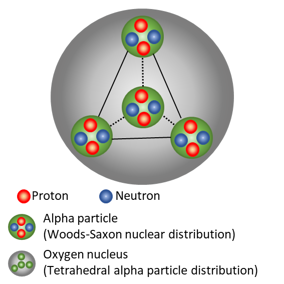
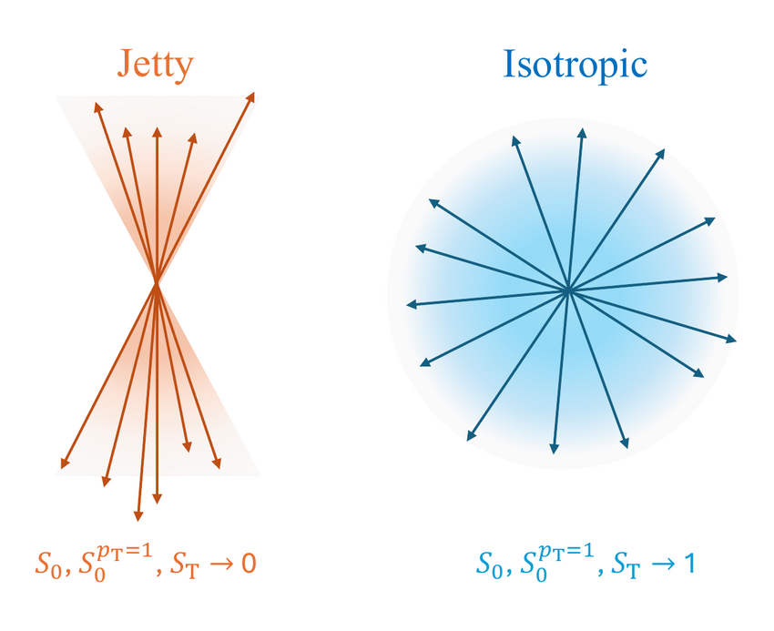
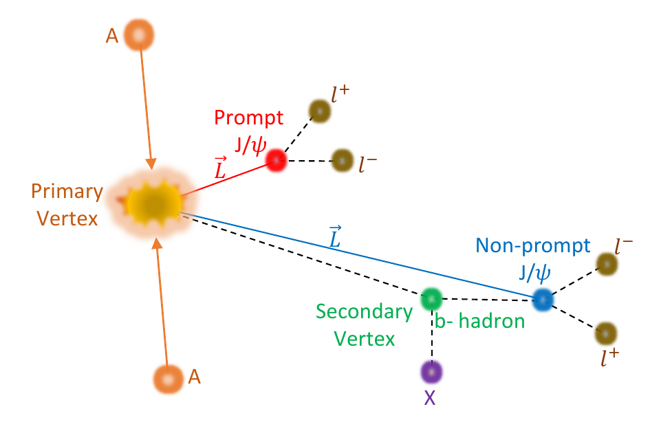

Research
I study how the matter produced in high-energy hadronic and nuclear collisions behaves when we change the size of the collision system, from pp to light ions to Pb–Pb. Below are the topics I work on, with the papers where you can find the details.
Nuclear structure in light-ion collisions
In 2025 the LHC collided oxygen and neon nuclei for the first time. These systems sit between pp and Pb–Pb in size, and their nuclei are not simple spheres. 16O may have four α-clusters arranged in a tetrahedron, and 20Ne has a strongly deformed bowling-pin like shape. Because the final-state anisotropic flow follows the initial geometry, these collisions give a way to see nuclear structure at TeV energies.
In my work I compare α-clustered and Woods-Saxon density profiles of 16O using AMPT and IP-Glasma + MUSIC hydrodynamics. We found that the anisotropic flow fluctuations, measured with multiparticle cumulants, are sensitive to the clustered geometry. More recently I have looked at symmetry plane correlations in OO and Ne–Ne, and at how the compactness of the α-clusters can be constrained from data.

Papers: Phys. Lett. B 860, 139145 (2025); Phys. Lett. B 870, 139941 (2025); Phys. Rev. D 108, 054022 (2023); Eur. Phys. J. A 61, 134 (2025); arXiv:2605.00866; arXiv:2607.26758.
Event-shape engineering
Selecting events by multiplicity alone mixes very different physics: a high-multiplicity pp event can come from many soft parton interactions or from a few hard jets. Event shape observables such as transverse spherocity and charged-particle flattenicity help to separate these two cases. A large part of my PhD was on using these classifiers to study strangeness enhancement and radial-flow like effects in pp collisions, and the correlation between initial eccentricity and final anisotropic flow in heavy-ion collisions.

Together with S. Tripathy, B. Sahoo and R. Sahoo, I wrote a review of event topology classifiers at the LHC, covering what they measure, their biases, and the results obtained so far. It is published in Physics Reports.
Papers: Phys. Rept. 1181, 1 (2026); Phys. Rev. C 111, 044902 (2025); Phys. Rev. D 107, 074011 (2023); Phys. Rev. D 107, 076012 (2023); Sci. Rep. 12, 3917 (2022).
Multiparticle correlations and flow
Higher order flow coefficients and the correlations between flow harmonics carry information on the initial state and on the transport properties of the medium that a single v2 measurement cannot give. I have studied how v2 feeds into the higher harmonics through nonlinear response, and how symmetry plane correlations change with event shape. In small systems the nonflow contribution can mimic these signals, so in a recent paper with N. Mallick we tested a better nonflow subtraction before predicting these observables in OO collisions. In another recent paper I used event-shape engineering with q2 and q3 selections to separate the parts of the symmetric cumulants in OO and Pb–Pb collisions.
Papers: Phys. Lett. B 868, 139753 (2025); Phys. Rev. D 112, 114012 (2025); arXiv:2610.36922; arXiv:2611.10914.
Machine learning for collider physics
I use machine learning where it can do something that the usual methods cannot do easily. With N. Mallick and G. G. Barnaföldi we built a deep neural network that estimates the elliptic flow of an event directly from the final-state particles. Later I worked on separating prompt and non-prompt J/ψ, open-charm hadrons and heavy-flavour decay leptons using their decay topology, with machine learning models trained on PYTHIA 8 events.

Papers: Phys. Rev. D 105, 114022 (2022); Phys. Rev. D 107, 094001 (2023); Phys. Rev. D 109, 014005 (2024); Phys. Rev. D 110, 034017 (2024); Phys. Rev. D 113, 094025 (2026); arXiv:2605.09022.
ALICE
I have been a member of the ALICE Collaboration since 2020 and have worked in both the Run 2 (AliRoot) and Run 3 (O2) analysis frameworks. During my PhD I measured K0S and Λ production as a function of charged-particle flattenicity in pp collisions at √s = 13.6 TeV. This was the first Run 3 analysis in ALICE with flattenicity, and I showed the preliminary results at Quark Matter 2025. I also contributed to the Run 2 flattenicity paper, Phys. Rev. D 111, 012010 (2025).
At Wigner I work on two-particle angular correlations in pO, OO and Ne–Ne collisions, to study jet-medium interaction and flow in these systems. The preliminary results were presented at LHCP 2026 (arXiv:2609.24237).
PhD thesis
Exploring the strangeness enhancement and collectivity in pp and Pb–Pb collisions at the LHC using event shape engineering. Indian Institute of Technology Indore, supervised by Prof. Raghunath Sahoo, defended on 6 October 2025. doi:10.17181/9v1cx-sq289
Tools
C++, Python, ROOT and PyROOT, Fortran; ALICE AliRoot and O2; PYTHIA 8, AMPT, EPOS, HIJING, IP-Glasma, MUSIC, iSS and UrQMD; machine learning methods for collider data; Linux clusters and grid computing.